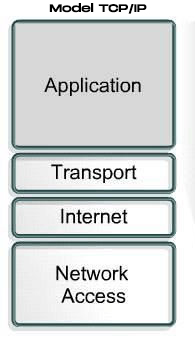
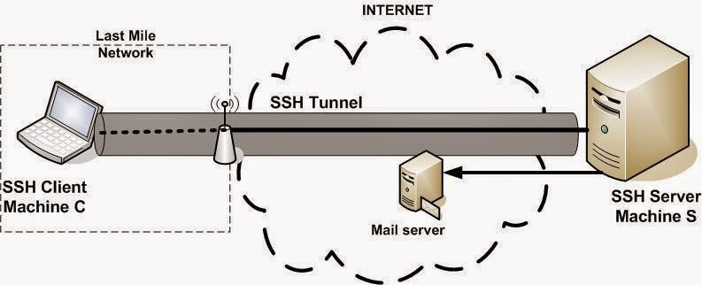
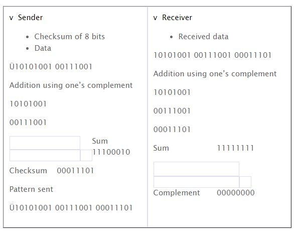

Model Referensi TCP/IP

Model referensi TCP/IP terdiri atas empat lapis
1. Application Layer
Layer di paling atas adalah Application Layer atau Layer Application. Layer ini termasuk ke dalam kategori upper layer atau layer yang berinteraksi dekat
dengan pengguna. Secara urutan, layer ini adalah layer yang berada di urutan paling atas, di atas Presentation Layer. Model TCP/IP tidak
memiliki session layer dan presentation layer. Layer ini memiliki macam-macam protokol tingkat tinggi, yaitu : TELNET, FTP,SMTP, DNS, HTTP, dan WWW.
2. Transport Layer
Layer di bawah Application Layer adalah Transport Layer. berfungsi menghubungkan antara aplication layer dan internet layer, contohnya : UDP, TCP, SNMP (apliccation) menggunakan UDP, Telnet, FTP, SMTP (apliccation) menggunakan TCP
3. Internet Layer
Layer ini berfungsi untuk memberikan layanan dasar pengantaran data. salah satu protokol yang bekerja pada layer ini adlah IP (internet protokol)
4. Network Interface
Layer terbawah dari model TCP/IP adalah Network Interface Layer, tanggung jawab utama
dari layer ini adalah menentukan bagaimana sebuah komputer dapat terkoneksi ke dalam
suatu jaringan komputer, hal ini sangat penting karena data harus dikirimkan dari dan ke
suatu host melalui sambungan pada suatu jaringan.
Mengapa Model Referensi dibuat berlayer?
- Membantu dalam desain protokol, karena protokol yang beroperasi
pada lapisan tertentu telah mendefinisikan informasi dan bertindak
untuk tugas tertentu dan menjadi penghubung untuk lapisan atas dan
bawahnya.
- Percepatan kompetisi antar vendor
- Mencegah pengaruh terhadap layer lainnya akibat adanya efek yang
terjadi akibat perubahan teknologi dan kemampuan pada suatu layer
- Menyediakan bahasa yang sama dalam mendeskripsikan fungsi dan
kemampuan jaringan
Penjelasan Port Number, fungsi, dan contoh proses kerjanya
Penjelasan
Port number pada jaringan komputer merupakan angka biner sepanjang 16 bit yang berfungsi sebagai nomor untuk layanan yang digunakan didalam jaringan komputer.
Fungsi
Fungsi Port Number Dalam Komunikasi Jaringan Komputer:
Well-known Port
yang pada awalnya berkisar antara 0 hingga 255 tetapi kemudian diperlebar untuk mendukung antara 0 hingga 1023. Port number yang termasuk ke dalam well-known port, selalu merepresentasikan layanan jaringan yang sama, dan ditetapkan oleh Internet Assigned Number Authority (IANA). Beberapa di antara port-port yang berada di dalam range Well-known port masih belum ditetapkan dan direservasikan untuk digunakan oleh layanan yang bakal ada pada masa depan dalam komunikasi kepemimpinan . Well-known port didefinisikan dalam RFC 1060.
-
Registered Port
Port-port yang digunakan oleh vendor-vendor komputer atau jaringan yang berbeda untuk mendukung aplikasi dan sistem operasi yang mereka buat. Registered port juga diketahui dan didaftarkan oleh IANA tetapi tidak dialokasikan secara permanen, sehingga vendor lainnya dapat menggunakan port number yang sama. Range registered port berkisar dari 1024 hingga 49151 dan beberapa port di antaranya adalah Dynamically Assigned Port.
-
Dynamically Assigned Port
Merupakan port-port yang ditetapkan oleh sistem operasi atau aplikasi yang digunakan untuk melayani request dari pengguna sesuai dengan kebutuhan. Dynamically Assigned Port berkisar dari 1024 hingga 65536 dan dapat digunakan atau dilepaskan sesuai kebutuhan sebagaimana penyebab keberhasilan dalam komunikasi.
Contoh Proses Kerja
Misalkan kita menggunakan protokol SSH

Cara kerja protokol SSH adalah menggunakan model client-server. Jadi koneksi yang terjadi adalah SSH client melakukan koneksi ke SSH server.
SSH client melakukan proses koneksi dan menggunakan kunci kriptografi untuk memverifikasi dan mengidentifikasi SSH server.
SSH client dan SSH server dapat tersambung menggunakan kunci yang sama serta melalui proses verifikasi.
Jika kunci tidak sama, koneksi tidak akan bisa pernah tersambung.
Jika tersambung, maka koneksi yang tersambung dienkripsi menggunakan symmetric encryption dan hashing algorithm. Proses enkripsi ini bertujuan untuk memastikan kerahasiaan dan keutuhan data yang dipertukarkan antara client dengan server.
Jadi SSH client mengawali koneksi dengan memanggil SSH server menggunakan aplikasi SSH client (PuTTY di Windows). Kemudian SSH server mengirimkan public key ke SSH client.
Kemudian SSH client merespon dengan memberikan pasangan kunci yang diberikan oleh SSH server.
Selanjutnya keduanya melakukan negosiasi atau verifikasi koneksi dan memulai membuka koneksi yang aman. Setelah selesai, SSH client sudah dapat masuk ke dalam server dengan pertukaran data yang terus dienkripsi.
Penjelasan tentang UDP
UDP adalah kependekan dari User Datagram Protocol metupakan bagian dari internet protocol. UDP merupakan salah satu protokol lapisan transpor TCP/IP yang mendukung komunikasi yang tidak andal (unreliable), tanpa koneksi (connectionless) antara host-host dalam jaringan yang menggunakan TCP/IP.
Prinsip Kerja UDP
Ada beberapa tahapan cara kerja UDP yang dilakukan, setiap tahapan kerja saling sinambung. Berikut penjelasan yang bersifat singkat.
- Paket berisi client port dan port sumber berbentuk file text dikirim di dalam UDP Header
- Paket isi port client dan port sumber audio dikirim ke server dalam UDP Header
- Tujuan UDP membaca nomor port tujuan dan proses data
- Paket asli mempunyai port tujuan, sehingga server bisa mengirimkan kembali data ke FTFP Client
- Point 3 dan 4 berulang kembali ketika file audio dikirimkan client.
- Ketika aplikasi ingin mengirim data, UDP tidak akan membuffer ataupun memfragmen tiap data yang masuk
- Karena data tidak mengalami prossesing data yang berbelit terutama karena tidak memfragmen data, maka jika data lebih besar daripada MTU, lapisan IP yang harus memfragmennya.
Prinsip kerja Checksum Checking
Checkum adalah urutan angka dan huruf yang digunakan untuk memeriksa apakah terdapat kesalahan data. Selain memeriksa kesalahan data, metode cheksum juga dapat digunakan untuk memeriksa apakah file tersebut masih asli atau telah mengalami perubahan akibat proses transmisi, penyimpanan atau modifikasi secara sengaja.
Contoh
